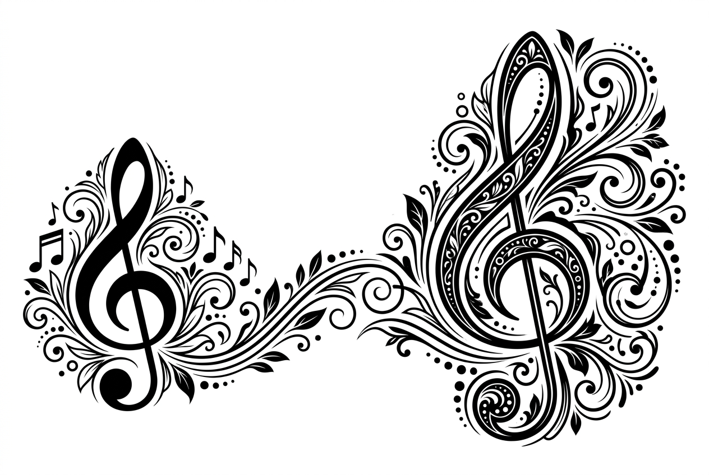
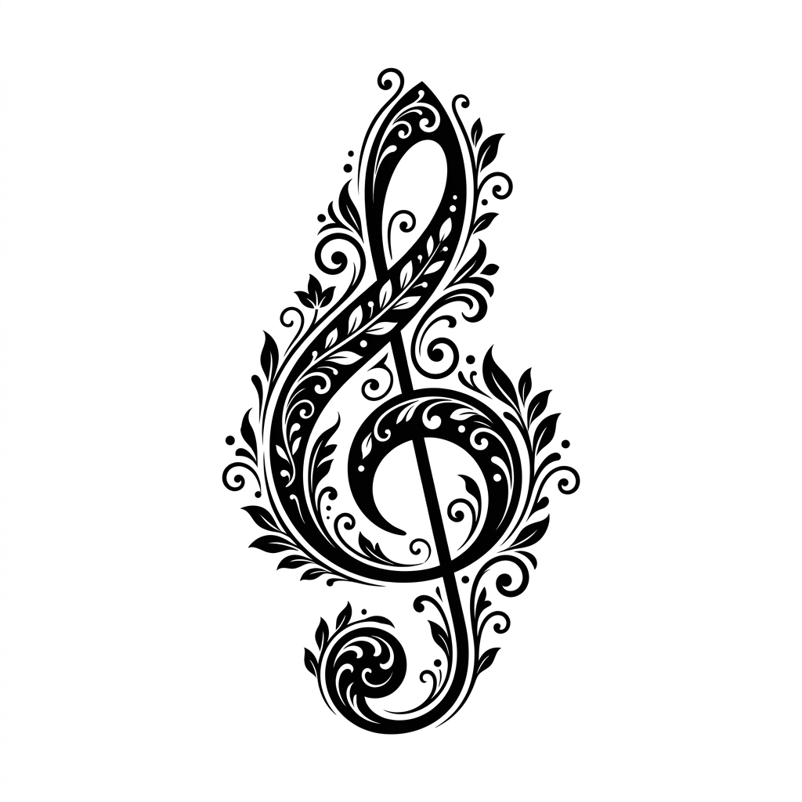

Porovnání připravených variant pro optimalizaci formátu, kontrastu a průhlednosti.
Věrné rozvržení jako v původním obrázku – menší klíč vlevo, linka s notami uprostřed a větší dominantní klíč vpravo.

Čistý vertikální motiv se zdobnými lístky a ornamenty – ideální jako decentní vodoznak v pravém rohu karty.
